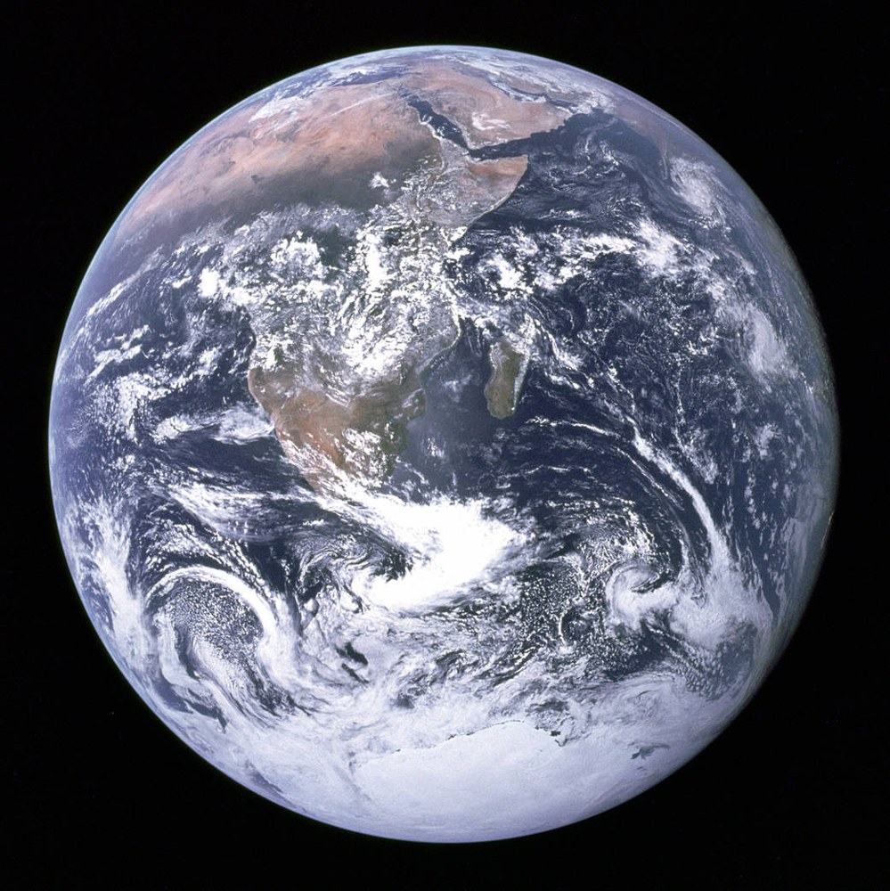
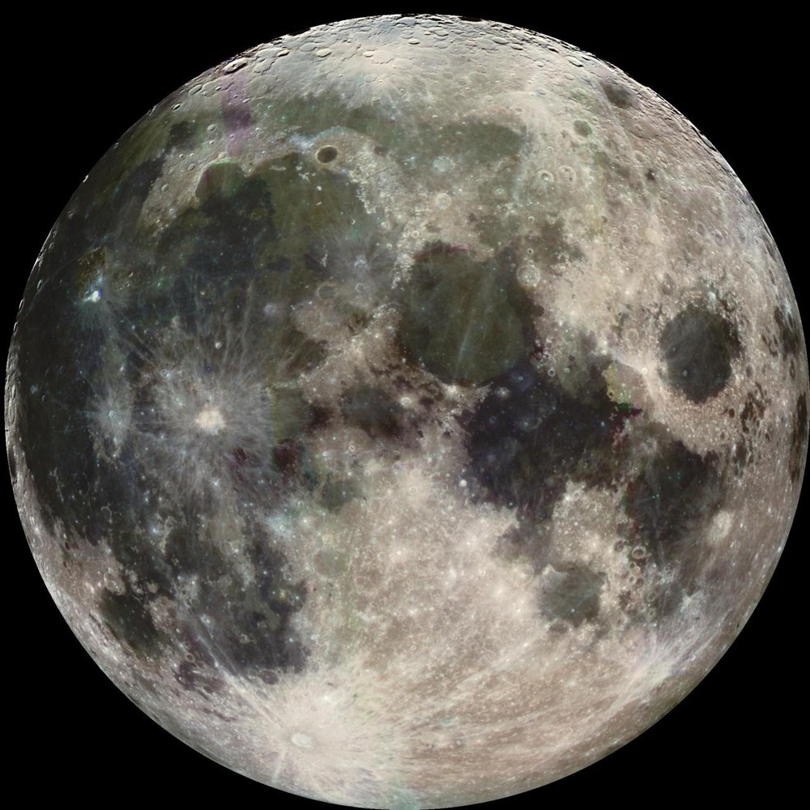
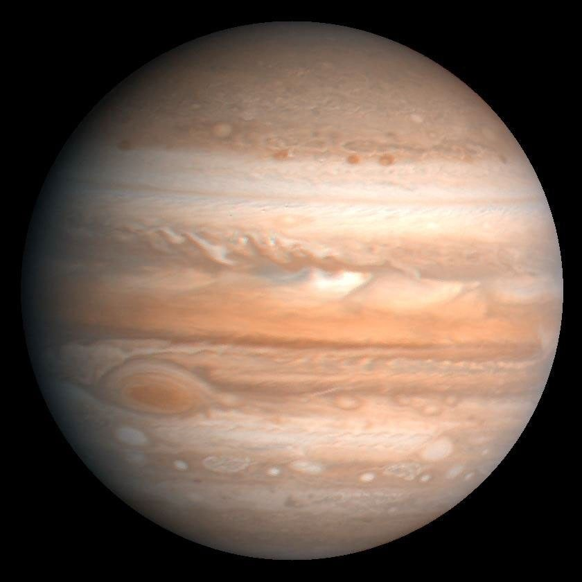

НАПРАВЛЕНИЕ 01
Знакомство с небом
Что такое созвездия, как читать карту неба и почему вид звезд меняется в течение года. Отправная точка для первых вопросов.
Студенческий астроклуб · учебный проект
Обновлено автоматически через GitHub Actions
«Орбита» — пример клуба для тех, кто хочет разобраться в ночном небе, задавать вопросы и обсуждать космос. Начать можно с любопытства.
Это учебный лендинг. Все встречи ниже — примеры, а не реальные анонсы.
«Орбита» показывает, каким может быть студенческий астроклуб: спокойное знакомство с темой, понятные объяснения и обсуждение вопросов. Описание формата — учебный пример.
Не нужно знать названия созвездий, разбираться в физике или иметь телескоп. Базовые понятия можно обсуждать с самого начала.
Формат адресован студентам и всем начинающим. Можно выбрать тему по интересу: от ориентирования на небе до вопросов о далеких галактиках.
Учебные направления помогают сориентироваться в теме. Это примеры содержания, а не расписание или обязательный курс.
НАПРАВЛЕНИЕ 01
Что такое созвездия, как читать карту неба и почему вид звезд меняется в течение года. Отправная точка для первых вопросов.
НАПРАВЛЕНИЕ 02
Чем отличаются наблюдения глазом, в бинокль и в телескоп. Как освещение и погода влияют на видимость объектов.
НАПРАВЛЕНИЕ 03
Планеты, звезды и галактики простыми словами. Разговор о том, что известно науке и какие вопросы остаются открытыми.
Три объекта для первого знакомства: Земля, Луна и Юпитер. Это материалы космических миссий, а не снимки или достижения клуба.

Снимок Земли с борта Apollo 17, 1972 год.
Источник: NASA
Луна на снимке аппарата Galileo, 1992 год.
Источник: NASA/JPL/USGS
Снимок Voyager 2, 1979 год; цвета усилены при обработке.
Источник: NASA/JPL/USGSВсе три карточки — демонстрационные примеры. Длительность ориентировочная; реальных дат, мест и записи на мероприятия здесь нет.
Знакомство с картой неба и обсуждение того, как узнавать заметные созвездия.
Разговор об устройстве телескопа, увеличении и реалистичных ожиданиях от наблюдений.
Обсуждение цвета, температуры и жизненного пути звезд без сложных вычислений.
Ниже — пример сценария знакомства с клубным форматом. Он описывает идею участия, но не подтверждает проведение встреч или регистрацию.
Посмотрите направления и примеры встреч. Предварительные знания не обязательны.
Можно сформулировать вопрос или просто выбрать то, о чем хочется узнать больше.
В этом проекте можно только увидеть пример заявки. Она ничего не отправляет и не записывает на встречу.
Для обсуждения базовых тем телескоп не нужен. В этом учебном примере практические наблюдения не организуются.
Описанный формат рассчитан на начинающих. Незнакомые слова — повод для вопроса, а не условие допуска.
Здесь нет обещаний наблюдений: видимость зависит от условий и оборудования. Сайт не является реальным анонсом.
Так могла бы выглядеть короткая форма знакомства. Это только элемент учебного интерфейса, а не регистрация в клубе.
Данные никуда не отправляются и не сохраняются сайтом. Кнопка выполняет только локальную проверку полей. Для знакомства с макетом не вводите реальные персональные данные.